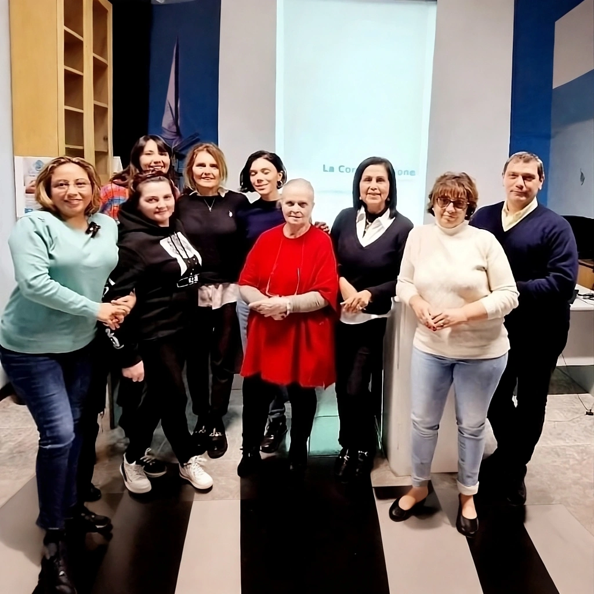

Cosa facciamo
Cosa facciamo
Curacari è un associazione di volontariato il cui obbiettivo è formare i volontari che si occuperanno del sostegno ai caregivers che si rivolgono allo sportello d’ascolto.
I destinatari sono caregiver familiari, di professione o stranieri immigrati come mezzo per integrarsi nella società e diventarne parte attiva.
I principali obiettivi formativi:
Servizi
Conoscenza dei servizi offerti dal sistema sanitario e orientamento riguardo come gestire le pratiche burocratiche
Comprensione
Comprensione delle problematiche fisiche, psicologiche e assistenziali delle persone non autosufficienti
Educazione alimentare
Principi generali di educazione alimentare
Insegnamento
Insegnamento di tecniche finalizzate al miglioramento del contesto abitativo
